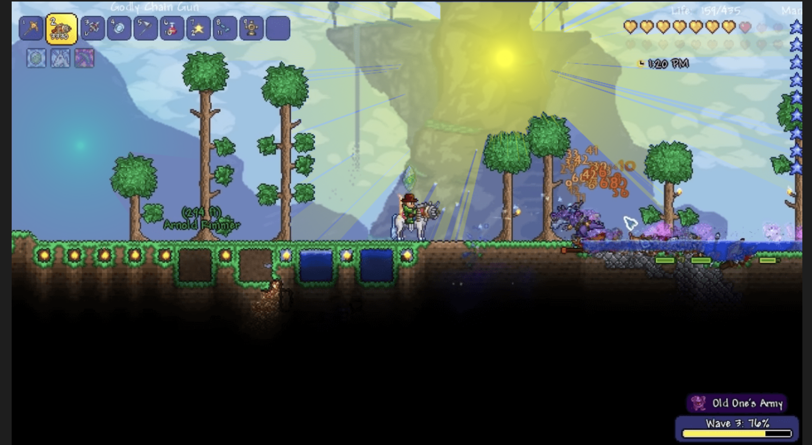
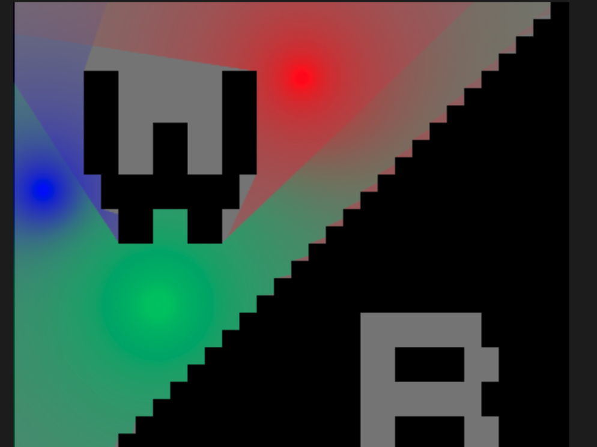

Here is our proposal.
Image processing with edge detection convolution kernel
We used the ridge detection kernel described in this page to process the image. This method essentially does a weighted calculation of the current pixel and surrounding pixels to compute the output pixel. The computations only use the input pixels and do not rely on one another, which means this stage is highly parallelizable. An example of our convolution implementation applied to a common game scenario is below:
original

edge detection

Some modifications to the edge detection algorithm were made to best suit our purposes. Our ray tracer algorithm depends on pixels being black or white, whereas the ridge detection algorithm yields a lot of gray pixels of varying values. We used a combination of scaling and thresholding to produce a reasonably clean portrayal of the image's edges. In addition, we inverted the colors such that edges are black and clear space is white, which is the opposite of what the default algorithm does.
The simplest parallelization was with OpenMP. By adding a pragma omp before iterating through the pixels of the array, we were able to speed the computation up by 5x.
Vectorizing the code with ISPC is difficult due to the 2D nature of the image and also because the types yielded by the image parser are not supported by ISPC or C. I am going to ask about how to resolve this in our meeting tomorrow. We anticipate this will have significant speedup because each computation requires the same number of instructions which means vector utilization will be high. The problem is that if we are unable to overcome the 2D array problem, the overhead of converting the image to a format interactable by ISPC will likely overshadow any performance benefits.
Raytracing
Rahul did this part. Hopefully he can add some details. We implemented raytracing with one or more light sources.
Raytracing applied after edge detection on terraria scene:
Raytracing for multiple light sources applied on low-resolution temporary image
